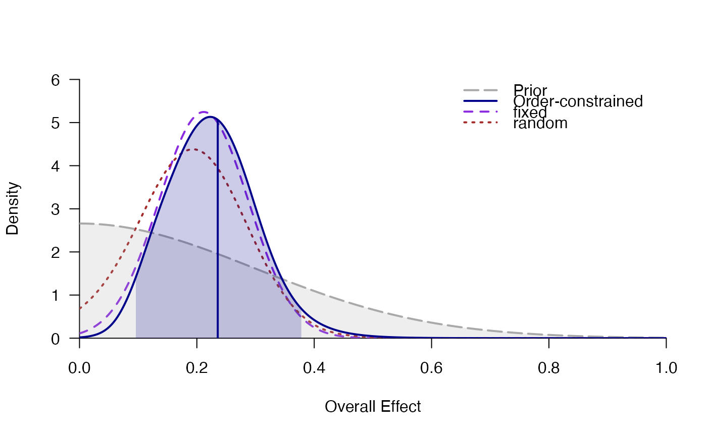

Computes the Bayes factor for the hypothesis that the true study effects in a random-effects meta-analysis are all positive or negative.
meta_ordered(
y,
SE,
labels,
data,
d = prior("norm", c(mean = 0, sd = 0.3), lower = 0),
tau = prior("invgamma", c(shape = 1, scale = 0.15)),
prior = c(1, 1, 1, 1),
logml = "integrate",
summarize = "stan",
ci = 0.95,
rel.tol = .Machine$double.eps^0.3,
logml_iter = 5000,
iter = 5000,
silent_stan = TRUE,
...
)effect size per study. Can be provided as (1) a numeric vector, (2)
the quoted or unquoted name of the variable in data, or (3) a
formula to include discrete or continuous moderator
variables.
standard error of effect size for each study. Can be a numeric
vector or the quoted or unquoted name of the variable in data
optional: character values with study labels. Can be a
character vector or the quoted or unquoted name of the variable in
data
data frame containing the variables for effect size y,
standard error SE, labels, and moderators per study.
prior distribution on the average effect size d. The
prior probability density function is defined via prior.
prior distribution on the between-study heterogeneity
tau (i.e., the standard deviation of the study effect sizes
dstudy in a random-effects meta-analysis. A (nonnegative) prior
probability density function is defined via prior.
prior probabilities over models (possibly unnormalized) in the
order c(fixed_H0, fixed_H1, ordered_H1, random_H1). Note that the
model random_H0 is not included in the comparison.
how to estimate the log-marginal likelihood: either by numerical
integration ("integrate") or by bridge sampling using MCMC/Stan
samples ("stan"). To obtain high precision with logml="stan",
many MCMC samples are required (e.g., logml_iter=10000, warmup=1000).
how to estimate parameter summaries (mean, median, SD,
etc.): Either by numerical integration (summarize = "integrate") or
based on MCMC/Stan samples (summarize = "stan").
probability for the credibility/highest-density intervals.
relative tolerance used for numerical integration using
integrate. Use rel.tol=.Machine$double.eps for
maximal precision (however, this might be slow).
number of iterations (per chain) from the posterior
distribution of d and tau. The samples are used for computing
the marginal likelihood of the random-effects model with bridge sampling
(if logml="stan") and for obtaining parameter estimates (if
summarize="stan"). Note that the argument iter=2000 controls
the number of iterations for estimation of the random-effect parameters per
study in random-effects meta-analysis.
number of MCMC iterations for the random-effects meta-analysis. Needs to be larger than usual to estimate the probability of all random effects being ordered (i.e., positive or negative).
whether to suppress the Stan progress bar.
further arguments passed to rstan::sampling (see
stanmodel-method-sampling). Relevant MCMC settings
concern the number of warmup samples that are discarded
(warmup=500), the total number of iterations per chain
(iter=2000), the number of MCMC chains (chains=4), whether
multiple cores should be used (cores=4), and control arguments that
make the sampling in Stan more robust, for instance:
control=list(adapt_delta=.97).
Usually, in random-effects meta-analysis,the study-specific random-effects
are allowed to be both negative or positive even when the prior on the
overall effect size d is truncated to be positive). In contrast, the
function meta_ordered fits and tests a model in which the random
effects are forced to be either all positive or all negative. The direction
of the study-specific random-effects is defined via the prior on the mode of
the truncated normal distribution d. For instance,
d=prior("norm", c(0,.5), lower=0) means that all random-effects are
positive (not just the overall mean effect size).
The posterior summary statistics of the overall effect size in the model
ordered refer to the the average/mean of the study-specific
effect sizes (as implied by the fitted truncated normal distribution) and
not to the location parameter d of the truncated normal
distribution (which is only the mode, not the expected value of a truncated
normal distribution).
The Bayes factor for the order-constrained model is computed using the
encompassing Bayes factor. Since many posterior samples are required for this
approach, the default number of MCMC iterations for meta_ordered is
iter=5000 per chain.
Haaf, J. M., & Rouder, J. N. (2018). Some do and some don’t? Accounting for variability of individual difference structures. Psychonomic Bulletin & Review, 26, 772–789. doi:10.3758/s13423-018-1522-x
# \donttest{
### Bayesian Meta-Analysis with Order Constraints (H1: d>0)
data(towels)
set.seed(123)
mo <- meta_ordered(logOR, SE, study, towels,
d = prior("norm", c(mean = 0, sd = .3), lower = 0)
)
#> Warning: There were 37 divergent transitions after warmup. See
#> https://mc-stan.org/misc/warnings.html#divergent-transitions-after-warmup
#> to find out why this is a problem and how to eliminate them.
#> Warning: Examine the pairs() plot to diagnose sampling problems
mo
#> ### Bayesian Meta-Analysis with Order Constraints ###
#> null: d = 0
#> fixed: d ~ 'norm' (mean=0, sd=0.3) truncated to the interval [0,Inf].
#> ordered: d ~ 'norm' (mean=0, sd=0.3) truncated to the interval [0,Inf].
#> tau ~ 'invgamma' (shape=1, scale=0.15) with support on the interval [0,Inf].
#> dstudy ~ Normal(d,tau) truncated to [0,Inf]
#> random: d ~ 'norm' (mean=0, sd=0.3) truncated to the interval [0,Inf].
#> tau ~ 'invgamma' (shape=1, scale=0.15) with support on the interval [0,Inf].
#> dstudy ~ Normal(d,tau)
#>
#> # Bayes factors:
#> (denominator)
#> (numerator) null fixed ordered random
#> null 1.0 0.0419 0.056 0.0975
#> fixed 23.9 1.0000 1.337 2.3259
#> ordered 17.9 0.7479 1.000 1.7396
#> random 10.3 0.4299 0.575 1.0000
#>
#> # Model posterior probabilities:
#> prior posterior logml
#> null 0.25 0.0189 -5.58
#> fixed 0.25 0.4505 -2.40
#> ordered 0.25 0.3369 -2.70
#> random 0.25 0.1937 -3.25
#>
#> # Posterior summary statistics of average effect size:
#> mean sd 2.5% 50% 97.5% hpd95_lower hpd95_upper n_eff Rhat
#> fixed 0.214 0.076 0.070 0.214 0.363 0.067 0.360 3361.1 1
#> ordered 0.235 0.075 0.105 0.230 0.394 0.098 0.382 NA NA
#> random 0.195 0.088 0.031 0.194 0.372 0.021 0.357 11359.9 1
plot_posterior(mo)

# }